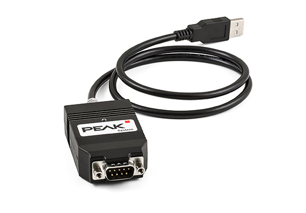
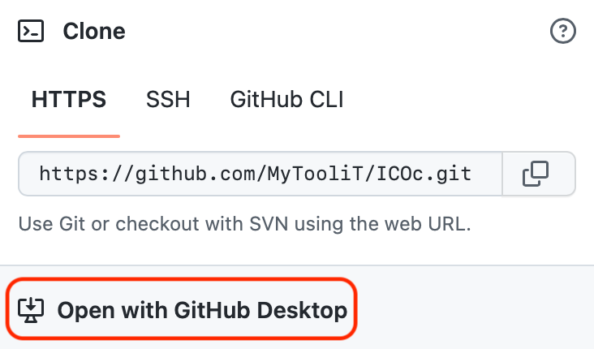
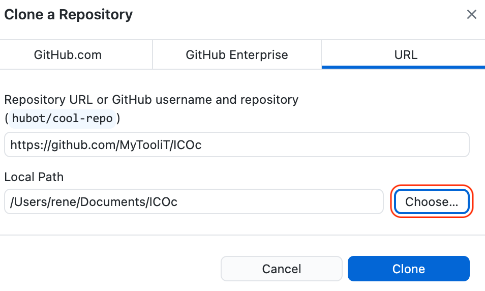
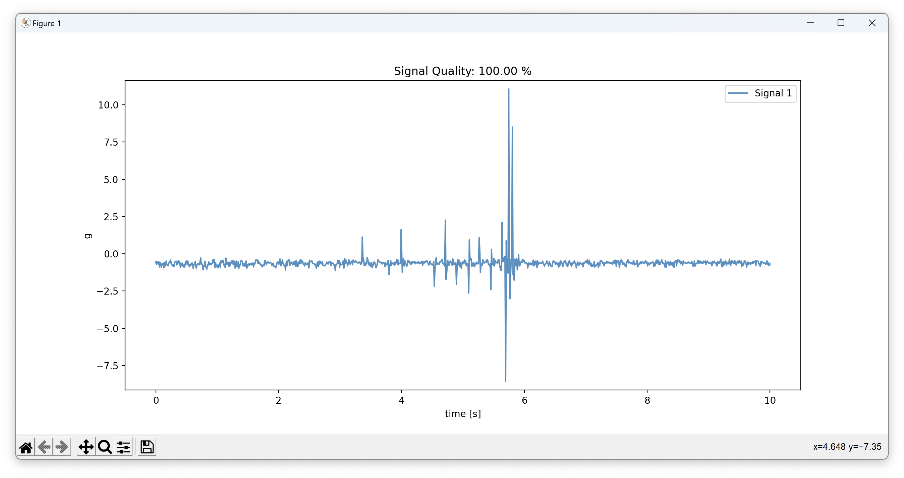
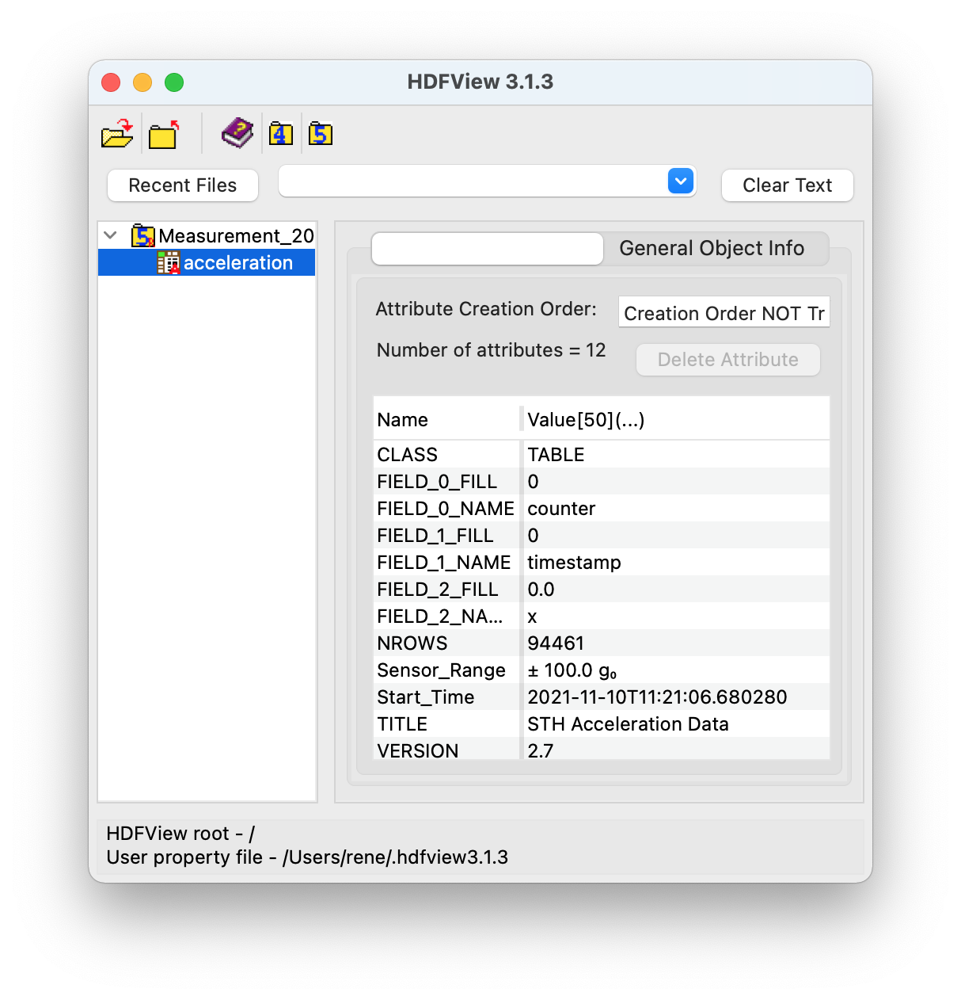
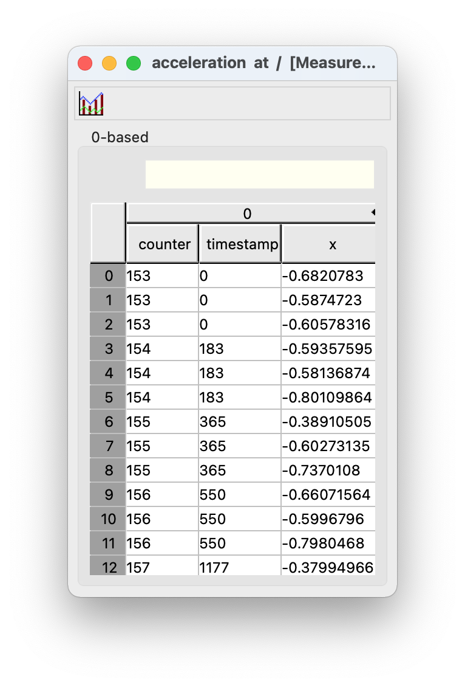
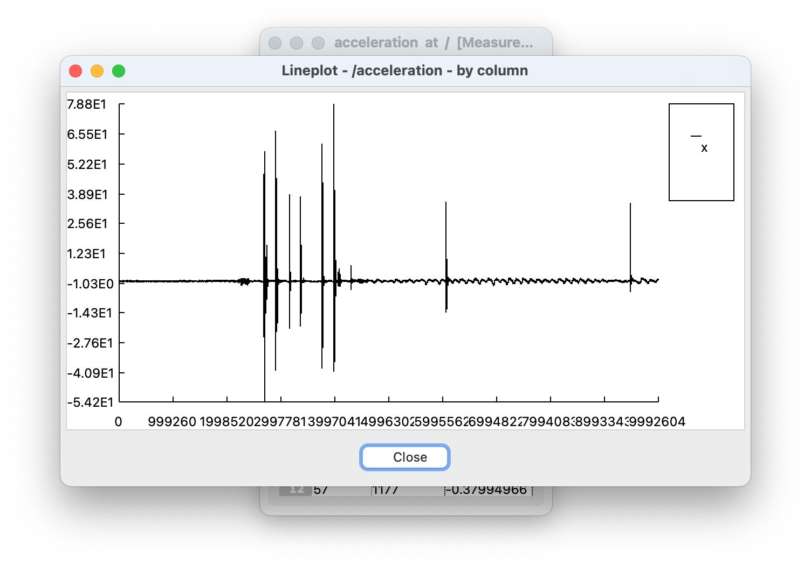
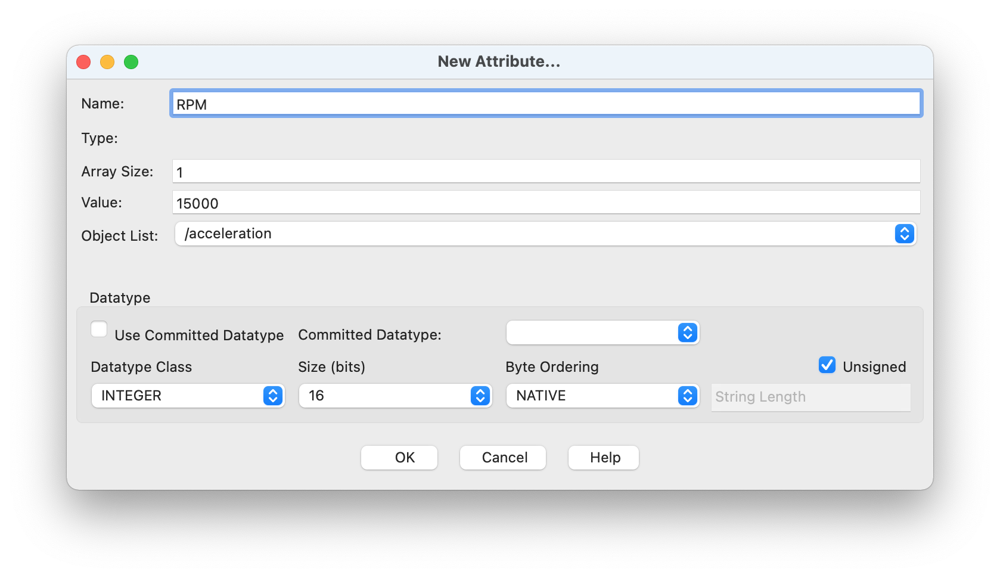
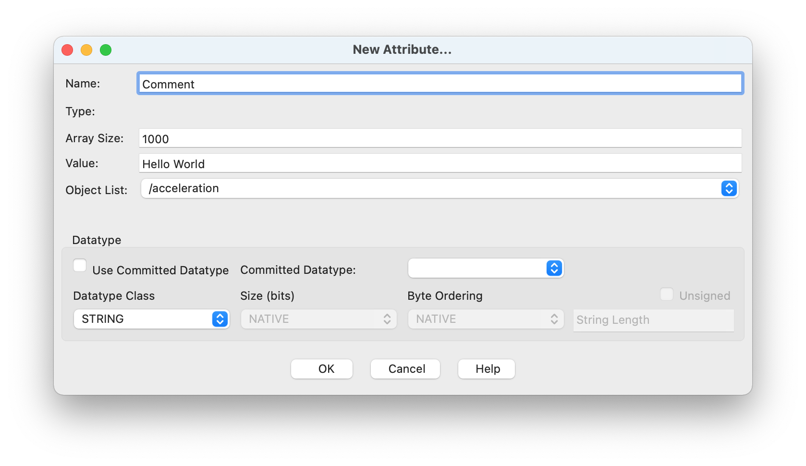

ICOc Documentation
1 ICOc
ICOc is a collection of tools and scripts for the ICOtronic system. Currently the main purpose of the software is
- data collection (via the script
icoc) and - testing the functionality of
- Stationary Transceiver Unit (STU) and
- sensor devices/nodes, such as
- Sensory Holder Assembly (SHA)/Sensory Tool Holder (STH)
- Sensory Milling Head (SMH)
The software reads data from the Stationary Transceiver Unit (STU) via CAN using the MyTooliT protocol. The STU itself reads from and writes data to the sensor devices via Bluetooth.
The framework currently requires
- Microsoft Windows 10, and
- Python 3.
Notes:
- In theory you can also use ICOc in Windows 11. However, we did not test the software on this operating system.
- The test suite (which uses a CAN class based on python-can) also works on Linux and macOS. The ICOc measurement software does not. For more information on how to use (parts of) the ICOc software on Linux, please take a look here.
For more information about other required software components, please read the subsection “Software” in this document.
1.1 Requirements
1.1.1 Hardware
In order to use ICOc you need at least:
a PCAN adapter:

including:
power injector, and
power supply unit (for the power injector):
a Stationary Transceiver Unit:

a sensor device, such as a Sensory Tool Holder:

1.1.1.1 Setup
- Connect the power injector
- to the PCAN adapter, and
- the power supply unit.
- Connect the USB connector of the PCAN adapter to your computer.
- Make sure that your sensor device (SHA/STH/SMH) is connected to a power source. For an STH this usually means that you should check that the battery is (fully) charged.
1.1.2 Software
1.1.2.1 Python
ICOc requires at least Python 3.8. The software also supports Python 3.9, 3.10 and (to a limited extent) 3.11.
Note: Since there is currently no official binary package (wheel) for PyTables available for Python 3.11 we recommend you use Python 3.10 unless you know how to
- install C/C++ build tools and
- the HDF5 C library
for your operating system.
You can download Python here. When you install the software, please do not forget to enable the checkbox “Add Python to PATH” in the setup window of the installer.
1.1.2.2 PCAN Driver
To communicate with the STU you need a driver that works with the PCAN adapter. The text below describes how to install/enable this driver on
1.1.2.2.1 Linux
You need to make sure that your CAN adapter is available via the SocketCAN interface.
The following steps describe one possible option to configure the CAN interface on (Fedora, Ubuntu) Linux manually.
Connect the CAN adapter to the computer that runs Linux (or alternatively the Linux VM)
Check the list of available interfaces:
networkctl listThe command output should list the CAN interface with the name
can0Configure the CAN interface with the following command:
sudo ip link set can0 type can bitrate 1000000Bring up the CAN interface
sudo ip link set can0 up
You can also configure the CAN interface automatically. For that purpose please store the following text:
[Match]
Name=can*
[CAN]
BitRate=1000000in a file called /etc/systemd/network/can.network. Afterwards enable networkd and reload the configuration with the commands:
sudo systemctl enable systemd-networkd
sudo systemctl restart systemd-networkd
sudo networkctl reloadYou can check the status of the CAN connection with the command:
networkctl listIf everything works as expected, then the output of the command should look similar to the text below:
IDX LINK TYPE OPERATIONAL SETUP
…
7 can0 can carrier configuredSources:
1.1.2.2.2 macOS
On macOS you can use the PCBUSB library to add support for the PCAN adapter. For more information on how to install this library please take a look here.
1.1.2.2.3 Windows
You can find the download link for the PCAN Windows driver here. Please make sure that you include the “PCAN-Basic API” when you install the software.
1.1.2.3 Simplicity Commander (Optional)
For the tests that require a firmware flash you need to either install
If you choose the first option, then please make sure to install the Simplicity Commander tool inside Simplicity Studio.
1.1.2.3.1 Linux
Please add the path to commander to the list COMMANDS → PATH → LINUX in the configuration file.
1.1.2.3.2 macOS
If you install Simplicity Studio or Simplicity Commander in the standard install path (/Applications) you do not need to change the config. If you put the application in a different directory, then please add the path to commander to the list COMMANDS → PATH → MAC in the configuration file.
1.1.2.3.3 Windows
If you installed Simplicity Studio (including Simplicity Studio) to the standard location, then you do not need to change the configuration.
If you download Simplicity Commander directly, then the tests assume that you unzipped the files into the directory
C:\SiliconLabs\Simplicity Commander.If you did not use any of the standard install path, then please add the path to
commander.exeto the listCOMMANDS→PATH→WINDOWSin the configuration file.
1.1.2.3.4 Additional Notes
- If you do not want to change the config file, and Simplicity Commander (
commander) is not part of the standard locations for your operating system, then please make sure thatcommanderis accessible via thePATHenvironment variable. - Please note, that you do not need to install Simplicity Commander if you just want to measure data with ICOc.
1.2 Install
1.2.1 Clone the Repository
Please clone this repository to a directory of your choice. You can either use the command line tool git:
git clone https://github.com/MyTooliT/ICOc.gitor one of the many available graphical user interfaces for Git to do that.
1.2.1.1 Example: Clone the Repository With GitHub Desktop
Download and install Github Desktop
Open Github Desktop and log into your GitHub account (optional)
Open the repository website in your browser
Click on the green button “Code” in your browser window
Select the item “Open with GitHub Desktop”

Inside GitHub Desktop choose the path where you want to clone the repository (button “Choose…”) e.g.
Documents/ICOcin your home directory
Press the button “Clone”
Wait until the cloning process is finished
1.2.2 Install the Python Package
Before you use the software you need to install it (in developer mode). To do that please open a terminal window in the directory where you cloned the repository and run the following command:
pip install -e .Afterwards you can use the various scripts included in the package.
1.2.2.1 Example: Install the Package Using Windows Terminal
Install (Windows) Terminal if you have not done so already; On Windows 11 this application should be installed by default.
Open Terminal
Enter the text
cd(including a trailing space character) in the Terminal windowGo to the directory where you cloned the ICOc repository (e.g.
Documents/ICOc) in File Explorer and “copy” (Ctrl + C) the directory“Paste” the copied directory into the Terminal window (Ctrl + V)
The resulting text in the Terminal now should look something like this (if you cloned the directory to
Documents/ICOcin your home directory)cd C:\Users\USERNAME\Documents\ICOcPress Return ⏎
Copy and paste the following text into the Terminal
pip install -e .Press Return ⏎
Wait until the installation finished successfully
Close Terminal
1.2.3 Troubleshooting
1.2.3.1 Import Errors
If one of the tests or ICOc fails with an error message that looks similar to the following text:
Traceback (most recent call last):
…
from numexpr.interpreter import MAX_THREADS, use_vml, __BLOCK_SIZE1__
ImportError: DLL load failed while importing interpreter: The specified module could not be found.
DLL load failed while importing interpreter: The specified module could not be found.then you probably need to install the “Microsoft Visual C++ Redistributable package”. You can download the latest version
1.2.3.2 Insufficient Rights
If you do not have sufficient rights to install the package you can also try to install the package in the user folder:
pip install --user -e .The command above might not work on Linux due to a bug in pip. In that case you can try the following workaround to install ICOc:
python3 -m pip install --prefix=$(python3 -m site --user-base) -e .1.2.3.3 Unable to Install in Editable Mode
If the ICOc install fails with the following error:
ERROR: Project …/ICOc has a 'pyproject.toml' and its build backend is missing the 'build_editable' hook.
Since it does not have a 'setup.py' nor a 'setup.cfg', it cannot be installed in editable mode.
Consider using a build backend that supports PEP 660.then your version of Setuptools needs to be updated before you install ICOc. You can use the following command to do that:
pip install -U pip setuptools1.2.3.4 Unable to Install PyTables
If you install ICOc and the install fails with an error message that looks like this:
…
Collecting tables…
Using cached tables-3.7.0.tar.gz (8.2 MB)
Installing build dependencies ... done
Getting requirements to build wheel ... error
error: subprocess-exited-with-error
× Getting requirements to build wheel did not run successfully.
│ exit code: 1
╰─> [35 lines of output]
cpuinfo failed, assuming no CPU features: No module named 'cpuinfo'
…
then there probably exist no official binary package (wheel) for PyTables for your OS and Python version yet. In the case of Python 3.11 and Windows you can install an unofficial version of PyTables from here:
Download
tables‑3.7.0‑cp311‑cp311‑win_amd64.whlto theDownloadsdirectory of the current userOpen a PowerShell terminal
Execute the following command:
pip install "$HOME/Downloads/tables-3.7.0-cp311-cp311-win_amd64.whl"
1.2.3.5 Unable to Locate HDF5
The installation of ICOc might fail with an error message that looks like this:
… implicit declaration of function 'H5close'If you uses Homebrew on an Apple Silicon based Mac you can use the following commands to fix this problem:
brew install hdf5 c-blosc lzo bzip2
export HDF5_DIR=/opt/homebrew/opt/hdf5
export BLOSC_DIR=/opt/homebrew/opt/c-blosc
pip install tables
# If the above command does not work you can also try:
# pip install git+https://github.com/PyTables/PyTables.git@v3.7.0
pip install -e .1.2.3.6 Unknown Command icoc
If pip install prints warnings about the path that look like this:
The script … is installed in
'…\Scripts'which is not on PATH.
then please add the text between the single quotes (without the quotes) to your PATH environment variable. Here …\Scripts is just a placeholder. Please use the value that pip install prints on your machine. If you used the installer from the Python website (and checked “Add Python to PATH”) or you used winget to install Python, then the warning above should not appear. On the other hand, the Python version from the Microsoft Store might not add the Scripts directory to your path.
1.3 Basic Usage
1.3.1 Starting the Program
The ICOc script can be used to control a sensor device. After you enter the command
icocin your terminal, a text based interface shows you the currently available options. For example, the text
ICOc
Name Address RSSI
———————————————————————————————————————————————
1: Blubb 08:6b:d7:01:de:81 -44 dBm
┌──────────────────────────────┐
│ 1-9: Connect to STH │
│ │
│ f: Change Output File Name │
│ n: Change STH Name │
│ │
│ q: Quit ICOc │
└──────────────────────────────┘shows that currently one sensor device was detected. The
- Bluetooth MAC address of the device is
08:6b:d7:01:de:81, while its - advertisement name is “Blubb”.
The last value “-44” is the current received signal strength indication (RSSI). To exit the program use the key q.
1.3.2 Reading Sensor Data
To read data from an STH (or SHA), start the ICOc script, and connect to an STH. To do that, enter the number in front of an STH entry (e.g. 1 for the first detected STH) and use the return key ⮐ to confirm your selection. The text based interface will now show you something like this:
ICOc
STH “Blubb” (08:6b:d7:01:de:81)
———————————————————————————————
Hardware Version 1.4.0
Firmware Version 2.1.10
Firmware Release Name Tanja
Serial Number –
Supply Voltage 3.16 V
Chip Temperature 26.2 °C
Run Time ∞ s
Prescaler 2
Acquisition Time 8
Oversampling Rate 64
⇒ Sampling Rate 9524
Reference Voltage VDD
Sensors M1: S1
┌───────────────────────────┐
│ s: Start Data Acquisition │
│ │
│ n: Change STH Name │
│ r: Change Run Time │
│ a: Configure ADC │
│ p: Configure Sensors │
│ O: Set Standby Mode │
│ │
│ q: Disconnect from STH │
└───────────────────────────┘To start the data acquisition press the key s. Afterwards a graphical window

will show the sensor data. To stop the data acquisition, click the close button on the top of the graph. For more information on how to use ICOc and the test suite, please take a look at the section “Tutorials”.
1.4 Measurement Data
Note: ICOc assumes that the sensor device always measures acceleration data in multiples of the gravity of earth, commonly referred as \(g\) or \(g_0\). While this is true for most of the sensor hardware (such as STHs), some sensor devices measure other values, e.g. force or temperature. Even in this case the measurement software will (incorrectly) convert the data into multiples of \(g\). We are working on adding support for configuring the sensor type in the firmware and ICOc to fix this issue.
The ICOc script stores measured acceleration values in HDF5 files. By default these files will be stored in the root of the repository with a
- name starting with the text
Measurement - followed by a date/time-stamp,
- and the extension
.hdf5.
To take a look at the measurement data you can use the tool HDFView. Unfortunately you need to create a free account to download the program. If you do not want to register, then you can try if one of the accounts listed at BugMeNot works.
The screenshot below shows a measurement file produced by ICOc:

As you can see the table with the name acceleration stores the acceleration data. The screenshot above displays the metadata of the table. The most important meta attributes here are probably:
Start_Time, which contains the start time of the measurement run in ISO format, andSensor_Range, which specifies the range of the used acceleration sensor in multiples of earth’s gravitation (g₀ ≅ 9.81 m/s²).
After you double click on the acceleration table on the left, HDFView will show you the actual acceleration data:

As you can infer from the x column above the table shows the acceleration measurement data (in multiples of g₀) for a single axis. The table below describes the meaning of the columns:
| Column | Description | Unit |
|---|---|---|
| counter | A cyclic counter value (0–255) sent with the acceleration data to recognize lost packets | – |
| timestamp | The timestamp for the measured value in microseconds since the measurement start | μs |
| x | Acceleration in the x direction as multiples of earth’s gravitation | g₀ (≅ 9.81 m/s²) |
Depending on your sensor and your settings the table might also contain columns for the y and/or z axis.
If you want you can also use HDFView to print a simple graph for your acceleration data. To do that:
- Select the values for the the ordinate (e.g. click on the x column to select all acceleration data for the x axis)
- Click on the graph icon in the top left corner
- Choose the data for the abscissa (e.g. the timestamp column)
- Click on the “OK” button
The screenshot below shows an example of such a graph:

1.4.1 Adding Custom Metadata
Sometimes you also want to add additional data about a measurement. To do that you can also use HDFView. Since the tool opens files in read-only mode by default you need to change the default file access mode to “Read/Write” first:
- Open HDFView
- Click on “Tools” → “User Options”
- Select “General Settings”
- Under the text “Default File Access Mode” choose “Read/Write”
- Close HDFView
Now you should be able to add and modify attributes. For example, to add a revolutions per minute (RPM) value of 15000 you can use the following steps:
- Open the measurement file in HDFView
- Click on the table “acceleration” in the left part of the window
- In the tab “Object Attribute Info” on the right, click on the button “Add attribute”
- Check that “Object List” contains the value “/acceleration”
- Enter the text “RPM” in the field “Name”
- In the field “Value” enter the text “15000”
- The “Datatype Class” should be set to “INTEGER”
- For the size (in bits) choose a bit length that is large enough to store the value. In our example everything equal to or larger than 16 bits should work.
- Optionally you can also check “Unsigned”, if you are sure that you only want to store positive values
- Click the button “OK”

Sometimes you also want to add some general purpose data. For that you can use the “STRING” datatype class. For example, to store the text “hello world” in an attribute called “Comment” you can do the following
- Repeat steps 1. – 4. from above
- Choose “STRING” as “Datatype Class”
- Under “Array Size” choose a length that is large enough to store the text such as “1000” (every size larger than or equal to 11 characters should work)
- Click the button “OK”

If you want you can also add multiline text. Since you can not add newlines using ⏎ in HDFView directly, we recommend you open your favorite text editor to write the text and then copy and paste the text into the value field. HDFView will only show the last line of the pasted text. However, after you copy and paste the text into another program you will see that HDFView stored the text including the newlines.
1.5 Changing Configuration Values
All configuration options are currently stored in the file YAML file config.yaml in the directory mytoolit/config. To change one of the values please use your favorite text editor and edit the file. Please make sure to not make any mistakes when you edit this file. Otherwise (parts of) ICOc might not work correctly afterwards.
1.5.1 Adding the Path to Simplicity Commander on Linux
Install a text editor (e.g. the GNOME Text Editor)
Open the file
mytoolit/config/config.yamlin your text editorScroll down to
COMMANDS→PATH→LINUX:# … COMMANDS: PATH: # … LINUX: [] # …Add the path to Simplicity commander (e.g.
/opt/Simplicity Commander/commander/) to the list below the keyLINUX:COMMANDS: PATH: # … LINUX: - /opt/Simplicity Commander/commander/ # …Store the modified configuration file
2 Tutorials
2.1 Sensor Device Renaming
Please start ICOc:
icocThe text based interface will show you a selection of the available devices:
ICOc Name Address RSSI ——————————————————————————————————————————————— 1: Serial 08:6b:d7:01:de:81 -44 dBm ┌──────────────────────────────┐ │ 1-9: Connect to STH │ │ │ │ f: Change Output File Name │ │ n: Change STH Name │ │ │ │ q: Quit ICOc │ └──────────────────────────────┘Choose the STH you want to rename by entering the number to the left of the device (here
1). To confirm your selection press the return key ⮐.Now the menu should look like this:
ICOc STH “Serial” (08:6b:d7:01:de:81) ———————————————————————————————— Hardware Version 1.4.0 Firmware Version 2.1.10 Firmware Release Name Tanja Serial Number – Supply Voltage 3.16 V Chip Temperature 26.2 °C Run Time ∞ s Prescaler 2 Acquisition Time 8 Oversampling Rate 64 ⇒ Sampling Rate 9524 Reference Voltage VDD Sensors M1: S1 ┌───────────────────────────┐ │ s: Start Data Acquisition │ │ │ │ n: Change STH Name │ │ r: Change Run Time │ │ a: Configure ADC │ │ p: Configure Sensors │ │ O: Set Standby Mode │ │ │ │ q: Disconnect from STH │ └───────────────────────────┘Press the button
nto change the name.Enter the new device name.
New STH name (max. 8 characters): BlubbConfirm the name with the return key ⮐.
The interface should now show you the menu of step 3. To disconnect from the holder press e.
Now you see the main menu of ICOc. The STH will show up under the name you used in step 4.
To exit ICOc, please use the key q.
2.2 Command Line Usage of ICOc
The ICOc program accepts optional command line arguments at startup. This way you can set default values for often used options. If you specify
- the name or
- Bluetooth address
of a sensor device, then you can even use ICOc without any user interaction, since in this case the program will immediately connect to the specified device and start the measurement process.
2.2.1 Available Options
To show the available command line options you can use the option -h:
icoc -hwhich should show you the following output:
usage: icoc [-h] [-b BLUETOOTH_ADDRESS | -n [NAME]] [-f FILENAME] [-r SECONDS] [-1 [FIRST_CHANNEL]] [-2 [SECOND_CHANNEL]] [-3 [THIRD_CHANNEL]] [-s 2–127] [-a {1,2,3,4,8,16,32,64,128,256}]
[-o {1,2,4,8,16,32,64,128,256,512,1024,2048,4096}] [-v {1V25,Vfs1V65,Vfs1V8,Vfs2V1,Vfs2V2,2V5,Vfs2V7,VDD,5V,6V6}] [--log {debug,info,warning,error,critical}]
Configure and measure data with the ICOtronic system
options:
-h, --help show this help message and exit
Connection:
-b BLUETOOTH_ADDRESS, --bluetooth-address BLUETOOTH_ADDRESS
connect to device with specified Bluetooth address (e.g. “08:6b:d7:01:de:81”)
-n [NAME], --name [NAME]
connect to device with specified name
Measurement:
-f FILENAME, --filename FILENAME
base name of the output file (default: Measurement)
-r SECONDS, --run-time SECONDS
run time in seconds (values equal or below “0” specify infinite runtime) (default: 0)
-1 [FIRST_CHANNEL], --first-channel [FIRST_CHANNEL]
sensor channel number for first measurement channel (1 - 255; 0 to disable) (default: 1)
-2 [SECOND_CHANNEL], --second-channel [SECOND_CHANNEL]
sensor channel number for second measurement channel (1 - 255; 0 to disable) (default: 0)
-3 [THIRD_CHANNEL], --third-channel [THIRD_CHANNEL]
sensor channel number for third measurement channel (1 - 255; 0 to disable) (default: 0)
ADC:
-s 2–127, --prescaler 2–127
Prescaler value (default: 2)
-a {1,2,3,4,8,16,32,64,128,256}, --acquisition {1,2,3,4,8,16,32,64,128,256}
Acquisition time value (default: 8)
-o {1,2,4,8,16,32,64,128,256,512,1024,2048,4096}, --oversampling {1,2,4,8,16,32,64,128,256,512,1024,2048,4096}
Oversampling rate value (default: 64)
-v {1V25,Vfs1V65,Vfs1V8,Vfs2V1,Vfs2V2,2V5,Vfs2V7,VDD,5V,6V6}, --voltage-reference {1V25,Vfs1V65,Vfs1V8,Vfs2V1,Vfs2V2,2V5,Vfs2V7,VDD,5V,6V6}
Reference voltage (default: VDD)
Logging:
--log {debug,info,warning,error,critical}
Minimum level of messages written to log (default: info)All options below the section “Measurement” and “ADC” in the help output of ICOc allow you to change the value of a specific configuration values before you start ICOc.
2.2.2 Channel Selection
To enable the measurement for the first (“x”) channel and second (“y”) channel of an “older” STH (Firmware 2.x, BGM113 chip) you can use the following command:
icoc -1 1 -2 1 -3 0Here 0 indicates that you want to disable the channel while a positive number (such as 1) specifies that the measurement for the channel should take place. Since the default value
- for the option
-1is already1, and - for the option
-3is already0
you can also leave out these options to arrive at the shorter command:
icoc -2 1Note: Due to a problem in the current firmware the amount of paket loss is much higher, if you
- use the standard ADC configuration values, and
- enable data transmission for exactly 2 (channels).
We strongly recommend you use either one or three channels.
For newer STH versions (Firmware 3.x, BGM121 chip) or SMHs (Sensory Milling Heads) you can also change the hardware/sensor channel for the first, second and third measurement channel. For example, to select
- hardware channel 8 for the first measurement channel
- hardware channel 1 for the second measurement channel, and
- hardware channel 3 for the third measurement channel
you can use the following command:
icoc -1 8 -2 1 -3 3Note: If you connect to an older STH using the command above, then the command would just enable the measurement for all three measurement channels, but not change the selected hardware channel.
If you just want to enable/set a measurement channel and use the hardware channel with the same number you can also just leave the argument for the specific measurement channel empty. For example, to use
- hardware channel 1 for measurement channel 1,
- hardware channel 2 for measurement channel 2, and
- hardware channel 3 for measurement channel 3
you can use the following command:
icoc -1 -2 -3or even shorter, since the default value for measurement channel 1 is hardware channel 1:
icoc -2 -32.2.3 Changing the Run Time
To change the run time of the measurement you can use the option -r, which takes the runtime in seconds as argument. The command
icoc -r 300for example, would change the runtime to 300 seconds (5 minutes).
2.2.4 Start the Measurement
If you specify one of the options
-b/--bluetooth-addressor-n/--name
then ICOC will try to connect immediately to the specified device and start the measurement run. For example, to acquire acceleration data from the device with the (Bluetooth advertisement) name “Blubb” you can use the following command:
icoc -n BlubbTo read acceleration values for 5 seconds from the device with the Bluetooth address 08:6b:d7:01:de:81 you can use the following command:
icoc -b 08:6b:d7:01:de:81 -r 52.2.5 Changing the Logging Level
By default ICOc only writes log messages of level INFO or higher. In some situations, for example when ICOc behaves incorrectly, you might want to set a lower level. You can do that using the option --log. For example, to activate logging of level WARNING and higher when you start ICOc you can use the following command:
icoc --log warningThe different logs for ICOc are stored in the root directory of the repository in the following files:
cli.log: Log messages of ICOcnetwork.log: Log messages of CAN network classplotter.log: Log messages of plotter (process for measurement graph)
2.2.6 Changing the Reference Voltage
For certain sensor devices you have to change the reference voltage to retrieve a proper measurement value. For example, STHs that use a ± 40 g acceleration sensor (ADXL356) require a reference voltage of 1.8 V instead of the usual supply voltage (VDD) of 3.3 V. To select the correct reference voltage for these devices at startup use the option -v Vfs1V8:
icoc -v Vfs1V82.3 ICOn CLI Tool
One issue of the ICOc (command line tool) is that it only works on Windows. Another problem is that it requires a CAN adapter from PEAK-System.
To improve this situation we offer an API based on python-can, which works on
- Linux,
- macOS, and
- Windows
and should (at least in theory) support the same CAN hardware as python-can. You can access most of this API using the “new” Network class.
We also offer a (currently very limited) CLI tool based on this API called ICOn. The text below describes how you can use this tool.
2.3.1 Listing Available Sensor Devices
To print a list of all available sensor devices please use the subcommand list:
icon list2.3.2 Renaming a Sensor Device
To change the name of a sensor you can use the subcommand rename. For example to change the name of the sensor device with the Bluetooth MAC address 08-6B-D7-01-DE-81 to Test-STH use the following command:
icon rename -m 08-6B-D7-01-DE-81 Test-STHFor more information about the command you can use the option -h/--help:
icon rename -h2.4 Production Tests
This tutorial lists the usual steps to test a sensory holder assembly or a sensory tool holder.
2.4.1 General
To run the production tests for one of the ICOtronic devices, please execute one of the following commands:
| Device | Command |
|---|---|
| Stationary Transceiver Unit (STU) | test-stu |
| Sensory Holder Assembly (SHA), Sensory Tool Holder (STH) | test-sth |
| Sensory Milling Head (SMH) | test-smh |
For a list of available command line options, please use the option -h after one of the commands e.g.:
test-sth -h2.4.1.1 Specific Tests
To only run a single test you need the specify its name. For example, to run the test test__firmware_flash of the STU you can use the following command:
test-stu TestSTU.test__firmware_flashYou can also run specific tests using pattern matching. To do that use the command line option -k. For example to run the firmware flash and the connection test of the STH test you can use the command:
test-sth -k flash -k connectionwhich executes all tests that contain the text flash or connection.
2.4.2 STH
The text below gives you a more detailed step-by-step guide on how to run the tests of the STH.
Note: You can skip this step, if you do not want to run the flash test. To skip the flash test, please set
STH→STATUSin the configuration file toEpoxied.Please either
- create a directory called
STH, or - clone the STH repository to a location
beside this repository inside your file system. Then create a directory called
buildsand put the current version of the STH firmware into this directory. Afterwards the directory and file structure should look like this:. ├── ICOc └── STH └── builds └── manufacturingImageSthv2.1.10.hexAs alternative to the steps above you can also change the variable
STH→Firmware→Location→Flashin the configuration file to point to the firmware that should be used for the flash test.- create a directory called
Make sure that the configuration value in the config file are set correctly. You probably need to change at least the following variables:
Name: Please change the Bluetooth advertisement name (
STH→NAME) to the name of the STH you want to test.Serial Number of Programming Board: Please make sure, that the variable
STH→PROGRAMMING BOARD→SERIAL NUMBERcontains the serial number of the programming board connected to the STH. This serial number should be displayed on the bottom right of the LCD on the programming board.
Now please open your favorite Terminal application and execute, the STH test using the command
test-sth. For more information about this command, please take a look at the section “General” above.Please note, that the test will rename the tested STH
to a Base64 encoded version of the Bluetooth MAC address, if
STH→STATUSis set toBare PCB, orto the serial number (
STH→PROGRAMMING BOARD→SERIAL NUMBER), if you set the status toEpoxied.
2.4.3 SMH
The preparation steps for the SMH test are very similar to the ones of the STH test.
Please make sure that the config value that stores the SMH firmware filepath (
SMH→Firmware→Location→Flash) points to the correct firmware. If you have not downloaded a firmware image for the SMH you can do so here.Check that the configuration values like SMH name (
SMH→NAME) and programming board serial number (SMH→PROGRAMMING BOARD→SERIAL NUMBER) are set correctly.Please execute the test using the following command:
test-smh
2.4.4 STU
The following description shows you how to run the STU tests.
Note: You can skip this step, if you do not want to run the flash test.
Please take a look at step 1 for the STH and replace every occurrence of STU with
STU. In the end of this step the directory structure should look like something like this:. ├── ICOc └── STU └── builds └── manufacturingImageStuv2.1.10.hexYou can find the current version of the STU firmware here.
Please take a look at the section “General” to find out how to execute the production tests for the STU. If you want to run the connection and EEPROM test (aka all tests except the flash test), then please execute the following command:
test-stu -k eeprom -k connection
Note: For the STU (flash) test to work correctly please connect the programming board to the USB port of the computer and the programming port of the STU first. Only after that connect the power injector to the power adapter. If you reverse this order, then the programmer might not work. If you do not connect the power injector, then the STU test might fail because of a CAN bus error:
Bus error: an error counter reached the ‘heavy’/‘warning’ limit
2.4.5 Firmware Versions
The (non-exhaustive) table below shows the compatible firmware for a certain device. The production tests assume that you use firmware that includes the bootloader.
| Device | Hardware Version | Microcontroller | Firmware |
|---|---|---|---|
| STH | 1.3 |
BGM113 | • Version 2.1.10 |
| STH | 2.2 |
BGM123 | • Aladdin |
| SMH | 2.1 |
BGM121 | • Version 3.0.0 • Version E3016 Beta |
2.5 Verification Tests
2.5.1 Preparation
- The tests assume that the name of the STH is stored in
STH→NAMEin the configuration fileconfig.yaml. - Some of the STH tests assume that you connected the SHA/STH or STU via the programming cable. Please do that, since otherwise these tests will fail.
2.5.2 Execution
To run the verification tests for the STH, please enter the following command:
test-sth-verification -vTo execute the STU verification tests, you can use the command:
test-stu-verification -vPlease note that while most of the tests should run successfully, if you use working hardware and firmware, some of them might fail occasionally. In this case please rerun the specific test using the option -k and specifying a text that matches the name of the test. For example to return the STH test test0107BlueToothConnectMin you can use the following command:
test-sth-verification -v -k test01072.5.3 Problematic Tests
The tables below contains a list of tests that failed using a working SHA/STH and STU before. It should provide you with a good overview of which of the verification tests might fail, even if the hardware and firmware works correctly.
2.5.3.1 STH
| Date | Failed Tests |
|---|---|
| 2021-09-29 | • test0107BlueToothConnectMin • test0332SignalIndicatorsAccZ • test0334SignalIndicatorsMulti • test0345MixedStreamingAccYZVoltBat |
| 2021-09-30 | • test0332SignalIndicatorsAccZ • test0334SignalIndicatorsMulti • test0345MixedStreamingAccYZVoltBat |
| 2021-09-30 | • test0332SignalIndicatorsAccZ • test0334SignalIndicatorsMulti • test0532MessageCountersAccZBattery |
| 2021-10-05 | • test0334SignalIndicatorsMulti • test0347StreamingAccXSingleBattery |
| 2021-10-06 | • test0109BlueToothRssi • test0334SignalIndicatorsMulti |
| 2021-10-06 | • test0107BlueToothConnectMin • test0334SignalIndicatorsMulti • test0345MixedStreamingAccYZVoltBat |
| 2021-10-07 | • test0107BlueToothConnectMin • test0332SignalIndicatorsAccZ • test0334SignalIndicatorsMulti • test0344MixedStreamingAccXYVoltBat • test0345MixedStreamingAccYZVoltBat |
| 2021-10-11 | • test0015PowerConsumptionEnergySaveMode2 • test0016PowerConsumptionEnergySaveModeAdv4000ms • test0332SignalIndicatorsAccZ • test0334SignalIndicatorsMulti • test0508AdcConfigSingle |
| 2021-10-12 | • test0332SignalIndicatorsAccZ • test0334SignalIndicatorsMulti • test0532MessageCountersAccZBattery |
| 2021-10-13 | • test0332SignalIndicatorsAccZ • test0334SignalIndicatorsMulti • test0508AdcConfigSingle • test0509AdcConfigDouble • test0510AdcConfigTripple • test0525MessageCounterAccZ |
| 2021-12-09 | • test0107BlueToothConnectMin • test0510AdcConfigTripple • test0523MessageCounterAccX • test0527MessageCounterAccXZ • test0529MessageCounterAccXYZ |
| 2021-12-14 | • test0107BlueToothConnectMin |
| 2022-05-17 | • test0015PowerConsumptionEnergySaveMode2 • test0016PowerConsumptionEnergySaveModeAdv4000ms • test0334SignalIndicatorsMulti • test0344MixedStreamingAccXYVoltBat • test0357StreamingAccXYSingleBattery |
2.6 Virtualization
You can also use (parts of) ICOc with various virtualization software. For that to work you have to make sure that (at least) the PEAK CAN adapter is attached to the virtual guest operating system. For some virtualization software you might have to install additional software for that to work. For example, VirtualBox requires that you install the VirtualBox Extension Pack before you can use USB 2 and USB 3 devices.
Note: Please be advised that the VirtualBox Extension Pack is paid software even though you can download and use it without any license key. Oracle might come after you, if you do not pay for the license, even if you use the Extension Pack in an educational setting.
The table below shows some of the virtualization software we tried and that worked (when we tested it).
| Virtualization Software | Host OS | Host Architecture | Guest OS | Guest Architecture |
|---|---|---|---|---|
| Parallels Desktop | macOS | x64 |
Ubuntu 20.04 | x64 |
| Parallels Desktop | macOS | x64 |
Windows 10 | x64 |
| Parallels Desktop | macOS | ARM64 |
Fedora 36 | ARM64 |
| VirtualBox | macOS | x64 |
Windows 10 | x64 |
| VirtualBox | Windows | x64 |
Fedora 36 | x64 |
| WSL 2 | Windows | x64 |
Ubuntu 20.04 | x64 |
2.6.1 Windows Subsystem for Linux 2
Using ICOc in the WSL 2 currently requires using a custom Linux kernel. We would not recommend using ICOc with this type of virtualization software, since the setup requires quite some amount of work and time. Nevertheless the steps below should show you how you can use the PEAK CAN adapter and hence ICOc with WSL 2.
Install WSL 2 (Windows Shell):
wsl --installInstall Ubuntu 22.04 VM (Windows Shell):
Open the Ubuntu 22.04 application
- Choose a user name
- Choose a password
Execute the following commands in a Powershell session
wsl --setdefault Ubuntu-22.04 wsl --set-version Ubuntu-22.04 2The second command might fail, if
Ubuntu-22.04already uses WSL 2. In this case please just ignore the error message.
-
Windows Shell:
Note: Please replace
<user>with your (Linux) username (e.g.rene)cd ~/Documents mkdir WSL cd WSL wsl --export Ubuntu-22.04 CANbuntu.tar wsl --import CANbuntu CANbuntu CANbuntu.tar wsl --distribution CANbuntu --user <user>Linux Shell:
sudo apt update sudo apt upgrade -y sudo apt install -y bc build-essential flex bison libssl-dev libelf-dev \ libncurses-dev autoconf libudev-dev libtool dwarves cd ~ git clone https://github.com/microsoft/WSL2-Linux-Kernel.git cd WSL2-Linux-Kernel uname -r # 5.15.74.2-microsoft-standard-WSL2 → branch …5.15.y git checkout linux-msft-wsl-5.15.y cat /proc/config.gz | gunzip > .config make menuconfigMake sure the following features are enabled:
Device Drivers→USB SupportDevice Drivers→USB Support→USB announce new devicesDevice Drivers→USB Support→USB Modem (CDC ACM) supportDevice Drivers→USB Support→USB/IPDevice Drivers→USB Support→USB/IP→VHCI HCDDevice Drivers→USB Support→USB Serial Converter SupportDevice Drivers→USB Support→USB Serial Converter Support→USB FTDI Single port Serial Driver
Enable the following features:
Networking support→CAN bus subsystem supportNetworking support→CAN bus subsystem support→Raw CAN ProtocolNetworking support→CAN bus subsystem support→CAN device drivers→Virtual Local CAN InterfaceNetworking support→CAN bus subsystem support→CAN device drivers→Serial / USB serial CAN Adaptors (slcan)Networking support→CAN bus subsystem support→CAN device drivers→ →CAN USB Interfaces→PEAK PCAN-USB/USB Pro interfaces for CAN 2.0b/CAN-FD
Save the modified kernel configuration.
Linux Shell:
touch .scmversion make sudo make modules_install sudo make install Install
usbipd-win(Linux Shell):cd tools/usb/usbip ./autogen.sh ./configure sudo make install sudo cp libsrc/.libs/libusbip.so.0 /lib/libusbip.so.0 sudo apt-get install -y hwdataCopy image (Linux Shell):
Note: Please replace
<user>with your (Windows) username (e.g.rene)cd ~/WSL2-Linux-Kernel cp arch/x86/boot/bzImage /mnt/c/Users/<user>/Documents/WSL/canbuntu-bzImageCreate
.wslconfigin (root of) Windows user directory and store the following text:[wsl2] kernel=c:\\users\\<user>\\Documents\\WSL\\canbuntu-bzImageNote: Please replace
<user>with your (Windows) username (e.g.rene)Set default distribution (Windows Shell)
wsl --setdefault CANbuntuShutdown and restart WSL (Windows Shell):
wsl --shutdown wsl -d CANbuntu --cd "~"Change default user of WSL distro (Linux Shell)
sudo nano /etc/wsl.confInsert the following text:
[user] default=<user>Note: Please replace
<user>with your (Windows) username (e.g.rene)Save the file and exit
nano:- Ctrl + O
- ⏎
- Ctrl + X)
Restart WSL: See step
8Install
usbipd(Windows Shell):winget install usbipdAttach CAN-Adapter to Linux VM (Windows Shell)
usbipd wsl list # … # 5-3 0c72:0012 PCAN-USB FD Not attached # … usbipd wsl attach -d CANbuntu --busid 5-3 usbipd wsl list # … # 5-3 0c72:0012 PCAN-USB FD Attached - CANbuntu # …Check for PEAK CAN adapter in Linux (Optional, Linux Shell):
dmesg | grep peak_usb # … # peak_usb 1-1:1.0: PEAK-System PCAN-USB FD v1 fw v3.2.0 (1 channels) # … lsusb # … # Bus 001 Device 002: ID 0c72:0012 PEAK System PCAN-USB FD # …Add virtual link for CAN device (Linux Shell)
sudo ip link set can0 type can bitrate 1000000 sudo ip link set can0 upInstall
pip(Linux Shell):sudo apt install -y python3-pipInstall ICOc (Linux Shell)
cd ~ mkdir Documents cd Documents git clone https://github.com/MyTooliT/ICOc.git cd ICOc python3 -m pip install --prefix=$(python3 -m site --user-base) -e .Run a script to test that everything works as expected (Linux Shell)
icon listIf the command above fails with the message
Command 'icon' not found…then you might have to logout and login into the WSL session again before you execute
icon listagain.
Notes:
You only need to repeat steps
12: attach the CAN adapter to the VM in Windows and14: create the link for the CAN device in Linux
after you set up everything properly once.
Unfortunately configuring the CAN interface automatically does not seem to work (reliably) on WSL yet
2.6.1.1 Installing/Using Simplicity Commander
Download and unpack Simplicity Commander (Linux Shell)
sudo apt install -y unzip mkdir -p ~/Downloads cd ~/Downloads wget https://www.silabs.com/documents/public/software/SimplicityCommander-Linux.zip unzip SimplicityCommander-Linux.zip cd SimplicityCommander-Linux tar xf Commander_linux_*.tar.bz mkdir -p ~/Applications mv commander ~/ApplicationsAdd
commanderbinary to path (Linux Shell)Open
~/.profileinnano:nano ~/.profileAdd the following text at the bottom:
if [ -d "$HOME/Applications/commander" ] ; then PATH="$HOME/Applications/commander:$PATH" fiSave your changes
Install JLink (Linux Shell)
Download JLink (64-bit DEB Installer) into your Windows user
DownloadsfolderCopy the installer
mv /mnt/c/Users/<user>/Downloads/*JLink_Linux*.deb ~/DownloadsNote: Please replace
<user>with your (Windows) username (e.g.rene)Install JLink package
cd ~/Downloads sudo dpkg -i JLink_Linux_*.deb sudo apt-get -fy install # if there were unresolved dependencies
Detach USB connector of programming adapter
Attach USB connector of programming adapter
Connect programming adapter to Linux (Windows Shell)
usbipd wsl list # … # 5-4 1366:0105 JLink CDC UART Port (COM3), J-Link driver Not attached # … usbipd wsl attach --busid 5-4Check if
commanderJLink connection works without usingsudo(Linux Shell)commander adapter dbgmode OUT --serialno <serialnumber> # Setting debug mode to OUT... # DONENotes:
Please replace
<serialnumber>with the serial number of your programming board (e.g.440069950):commander adapter dbgmode OUT --serialno 440069950If the command above fails with the error message:
error while loading shared libraries: libGL.so.1: cannot open shared object file…then you need to install
libgl1:sudo apt install -y libgl1
2.6.1.2 Run Tests in WSL
Start WSL (Windows Shell)
wsl -d CANbuntu --cd "~/Documents/ICOc"Connect programming/CAN adapter to Linux (Windows Shell):
usbipd wsl list # … # 5-3 0c72:0012 PCAN-USB FD Not attached # 5-4 1366:0105 JLink CDC UART Port (COM3), J-Link driver Not attached # … usbipd wsl attach -d CANbuntu --busid 5-3 usbipd wsl attach -d CANbuntu --busid 5-4Configure CAN interface (Linux Shell):
sudo ip link set can0 type can bitrate 1000000 sudo ip link set can0 upRun tests (Linux Shell):
make run
2.6.2 Docker on Linux
The text below shows how you can use (code of) the new Network class in a Docker container on a Linux host. The description on how to move the interface of the Docker container is an adaption of an article/video from the “Chemnitzer Linux-Tage”. Currently we provide two images based on:
2.6.2.1 Build/Pull the Docker Image
You can download a recent version of the image from Docker Hub
- for Alpine:
docker image pull mytoolit/icoc-alpine:latest- or Ubuntu:
docker image pull mytoolit/icoc-ubuntu:latestAnother option is to build the image yourself.
- Alpine Linux:
docker build -t mytoolit/icoc-alpine -f Docker/Alpine/Dockerfile .- Ubuntu:
docker build -t mytoolit/icoc-ubuntu -f Docker/Ubuntu/Dockerfile .2.6.2.2 Using ICOc in the Docker Container
Run the container (Terminal 1)
Open a new terminal window
Depending on the Docker container you want to use please execute one of the following commands:
Alpine:
docker run --rm -it --name icoc mytoolit/icoc-alpineUbuntu:
docker run --rm -it --name icoc mytoolit/icoc-ubuntu
Make sure the CAN interface is available on the Linux host (Terminal 2)
Open a new terminal window
Check that the following command:
networkctl listlists
can0under the columnLINK
Move the CAN interface into the network space of the Docker container (Terminal 2)
export DOCKERPID="$(docker inspect -f '{{ .State.Pid }}' icoc)" sudo ip link set can0 netns "$DOCKERPID" sudo nsenter -t "$DOCKERPID" -n ip link set can0 type can bitrate 1000000 sudo nsenter -t "$DOCKERPID" -n ip link set can0 upRun a test command in Docker container (Terminal 1) e.g.:
icon list
2.6.2.3 Updating Images on Docker Hub
To update the official Docker images on Docker Hub, pleas use the steps below:
Login to Docker Hub
docker login -u mytoolit -p "$ACCESS_TOKEN"Note: Please make sure that the variable
ACCESS_TOKENcontains a valid access tokenPush the images:
docker image push mytoolit/icoc-alpine:latest docker image push mytoolit/icoc-ubuntu:latest
3 Scripts
After you installed the ICOc package various helper scripts are available:
clean-repo: Remove log (*.txt), HDF (*.hdf5) and PDF files (*.pdf) from the repository rootconvert-base64-mac: Utility to convert a Base64 encoded 8 character text into a Bluetooth MAC addressconvert-mac-base64: Convert Bluetooth MAC address into a (Base64) encoded 8 character stringcheck-eeprom: Write a byte value into the cells of an EEPROM page an check how many of the values are read incorrectly after an reseticoc: Controller and measurement software for the ICOtronic systemicon: Controller software for the ICOtronic systemtest-smh: Test code for the SMHtest-sth: Test code for the STH/SHAtest-stu: Test code for the STU
3.1 EEPROM Check
The script check-eeprom connects to an STH using its MAC address. Afterwards it writes a given byte value (default: 10) into all the cells of an EEPROM page. It then resets the STH, connects again and shows the amount of incorrect EEPROM bytes. It repeats the last steps 5 times before it prints all values in the EEPROM page.
The command below shows how to execute the EEPROM check for the STH with MAC address 08:6b:d7:01:de:81:
check-eeprom 08:6b:d7:01:de:81You can specify the value that should be written into the EEPROM cells using the option --value:
check-eeprom 08:6b:d7:01:de:81 --value 423.2 ICOc
The command icoc calls ui.py. All command line arguments to the script will be directly forwarded to ui.py. For example, to read acceleration data for 10 seconds from the STH with the (Bluetooth advertisement) name CGvXAd6B, you can use the following command:
icoc -n CGvXAd6B -r 103.3 ICOn
The command ICOn uses the new Network class (based on python-can) to communicate with the ICOtronic system. Compared to ICOc the script currently offers very limited functionality. However, in the future most of the functionality from ICOc should be integrated into this new command line tool. A big advantage of ICOn compared to ICOc is that the command also works on Linux and macOS. For more information, please take a look here.
3.4 MAC Address Conversion
The utility convert-mac-base64 returns the Base64 encoded version of a MAC address. We use the encoded addresses as unique Bluetooth advertisement name for the STH (or SHA). Unfortunately we can not use the MAC address directly because the maximum length of the name is limited to 8 characters. To decode the Base64 name back into a Bluetooth address you can use the script convert-base64-mac.
3.5 Remove Log, HDF and PDF Files
The script clean-repo removes
- HDF files (
*.hdf5), - PDF files (
*.pdf), and - log files (
*.log)
from the repository root folder. To show the names of the removed files add the option -v (or --verbose):
clean-repo -vIf you also want to remove Python bytecode files from the repository we recommend you install pyclean:
pip install pycleanand run the following commands in the root of the repository:
clean-repo -v; pyclean -v .3.6 Test-STH
The command test-sth is a command that executes the tests for the STH (sth.py). All command line arguments of the wrapper will be forwarded to sth.py.
4 Development
4.1 Install
You can install ICOc including the relevant development tools using the following command in the root of the repository:
pip install -e .[dev,test]4.2 Style
Please use the guidelines from PEP 8. For code formatting we currently use YAPF, which should format code according to PEP 8 by default.
To format the whole code base you can use the following command in the root of the repository:
yapf --in-place --parallel --recursive .YAPF will not
- split long strings and
- add newlines to long lines not surrounded by parentheses.
To make sure that code has a maximum line length of 79 characters please split up long strings and add parentheses yourself.
For development we recommend that you use a tool or plugin that reformats your code with YAPF every time you save. This way we can ensure that we use a consistent style for the whole code base.
4.3 Tests
The following text describes some of the measures we should take to keep the software stable.
Please only push your changes to the master branch, if you think there are no new bugs or regressions. The master branch should always contain a working version of the software. Please always run
- the automatic test (
make run) for every supported OS (Linux, macOS, Windows) and - the manual tests on Windows
before you push to the master branch.
4.3.1 Code Checks
4.3.1.1 Flake8
We check the code with flake8:
pip install flake8Please use the following command in the root of the repository to make sure you did not add any code that introduces warnings:
flake84.3.1.2 Mypy
To check the type hint in the code base we use the static code checker Mypy:
pip install mypyPlease use the following command in the root of the repository to check the code base for type problems:
mypy mytoolit4.3.2 Automatic Tests
4.3.3 Manual Tests
4.3.3.1 ICOc
- Call the command
icoc. - Connect to a working STH (Enter the number and press ⏎)
- Start the data acquisition (s)
- After some time a window displaying the current acceleration of the STH (or SHA) should show up
- Shake the STH
- Make sure the window shows the increased acceleration
- Close the window
- The programm should now exit, without any error messages
4.3.3.2 STH Test
- Call the command
test-sthfor a working STH - Wait for the command execution
- Check that the command shows no error messages
- Open the PDF report (
STH Test.pdf) in the repository root and make sure that it includes the correct test data
4.3.3.3 STU Test
- Call the command
test-stu(ortest-stu -k eeprom -k connectionwhen you want to skip the flash test) for a working STU - Wait for the command execution
- Check that the command shows no error messages
- Open the PDF report (
STU Test.pdf) in the repository root and make sure that it includes the correct test data
4.3.3.3.1 Extended Tests
The text below specifies extended manual test that should be executed before we release a new version of ICOc. Please note that the tests assume that you use more or less the default configuration values.
4.3.3.3.1.1 Check Command Line Interface
Open your favorite terminal application and change your working directory to the root of the repository
Remove log and data files from the repository:
clean-repoCheck that no HDF5 files exist in the repository. The following command should not produce any output:
ls *.hdf5Give your test STH the name “Test-STH”
Measure data for 10 seconds using the following command:
icoc -n 'Test-STH' -r 10Check that the repo now contains a HDF5 (
*.hdf5) filels *.hdf5Open the file in HDFView
Check that the table
accelerationcontains about 95 000 valuesCheck that the table contains three columns
Check that the meta attributes
Sensor_RangeandStart_TimeexistCheck that
Sensor_Rangecontains the correct maximum acceleration values for “Test-STH”Check that
Start_Timecontains (roughly) the date and time when you executed the command from step 5Check that ICOc handles the following incorrect program calls. The program should not crash and print a (helpful) error description (not a stak trace) before it exits.
icoc -b '12-12-12-12-12' icoc -n 'TooooLong' icoc -s 1 icoc -a 257 icoc -o -1 icoc -1 ' -1' icoc -2 256 icoc -3 nine
4.3.3.3.1.2 Check User Interface
Repeat steps 1. – 4. from the test above
Open ICOc using the following command:
icocThe main menu of ICOc should show up
Try to connect to a non-existent STH
- Enter the text “1234”
- Press ⏎
- ICOc should ignore the incorrect input and just display the main window
Change the output file name to “Test”
- Press f
- Remove the default name and enter the text “Test”
- Press ⏎
- After two seconds ICOc should show the main menu again
Connect to your test STH/SHA
- Enter the number besides “Test-STH”: Usually this will be the number “1”
- Press ⏎
- You should now be in the STH menu
Change the runtime to 20 seconds
- Press r
- Enter the text “hello”
- The last step should not have changed the default runtime of “0”
- Remove the default runtime (press ⌫)
- Enter the text “20”
- Press ⏎
Enable the first and second measurement channel
- Press p
- Remove the default axis config for the first measurement channel (press ⌫ at least one time)
- Enter the characters “23456789ab”
- The last step should not have changed the empty input value
- Enable the first measurement channel:
- Press 1
- Press ⏎
- Enable the second measurement channel:
- Press ⌫
- Press 1
- Press ⏎
- Disable the third measurement channel:
- Press ⌫
- Press 0
- Press ⏎
Start the data acquisition
- Press s
- Shake the STH
- Make sure that shaking the STH changes (at least) the displayed value for the first measurement channel
- Wait until the measurement took place
Check the output file
- Check that the HDF5 output file exists: The filename should start with the characters “Test” followed by a timestamp and the extension “.hdf5”
- Open the HDF measurement file in HDFView
- Check that the table contains four columns
- One of the columns should have the name
x - Another column should have the name
y
4.3.4 Combined Checks & Tests
While you need to execute some test for ICOc manually, other tests and checks can be automated.
Note: For the text below we assume that you installed make on your machine.
To run all checks, the STH test and the STU test use the following make command:
make runAfterwards make sure there were no (unexpected) errors in the output of the STH and STU test.
4.4 Release
Check that the CI jobs for the
masterbranch finish successfullyCheck that the checks and tests run without any problems on Linux, macOS and Windows
Set the value of
STH→Statusinconfig.yamltoEpoxiedExecute the command:
make runin the root of the repository
Check that the firmware flash works in Windows
Execute
test-sth- once with
STH→Statusset toEpoxied, and - once set to
Bare PCB
in the configuration. To make sure, that the STU flash test also works, please use both STU test commands described in the section “STU Test”.
If you follow the steps above you make sure that the flash tests work for both STU and STH, and there are no unintentional consequences of (not) flashing the chip before you run the other parts of the test suite.
- once with
Execute the extended manual tests in Windows and check that everything works as expected
Create a new release here
Open the release notes for the latest version
Replace links with a permanent version:
For example instead of
../../something.txtusehttps://github.com/MyTooliT/ICOc/blob/REVISION/something.txt,
where
REVISIONis the latest version of the master branch (e.g.8568893ffor version1.0.5)Commit your changes
Copy the release notes
Paste them into the main text of the release web page
Decrease the header level of each section by two
Remove the very first header
Check that all links work correctly
Change the
__version__number inside themytoolitpackagePush the latest two commits
Insert the version number (e.g.
1.0.5) into the tag fieldFor the release title use “Version VERSION”, where
VERSIONspecifies the version number (e.g. “Version 1.0.5”)Click on “Publish Release”
Close the milestone for the latest release number
Create a new milestone for the next release
5 Releases
5.1 Version 1.6.0
5.1.1 Docker
We now provide ICOc-Docker images based on
- Alpine Linux and
- Ubuntu
For more information, please take a look here.
5.1.4 ICOn
We now provide the command line tool icon in addition to icoc. This CLI tool currently only offers a very limited subset of the functionality of icoc. However, since ICOn is based on python-can, it offers two advantages over icoc:
- ICOn works on Linux and macOS (in addition to Windows)
- ICOn supports additional CAN adapters
5.1.6 Setup
We modernized the setup process of the Python package and removed setup.py in favor of pyproject.toml.
5.2 Version 1.5.0
5.2.1 ICOc
5.2.1.1 Command Line
You can now set/enable the measurement for channel 2 and 3 just by providing the option for the measurement channel without an argument. In this case the measurement channel will be mapped to the corresponding hardware/sensor channel, i.e.
- measurement channel 2 will use hardware channel 2 and
- measurement channel 3 will use hardware channel 3.
Example:
icoc -2The command above will use
- hardware channel 1 for measurement channel 1 (default value),
- hardware channel 2 for measurement channel 2, and
- disable measurement channel 3.
ICOc can now connect to an STH, which has “no name” using the command line option
-n(--name):icoc -n '' # alternatively you can also just use `icoc -n`
5.2.2 STH Tests
The STH test script now uses the hardware version in the configuration (
STH→HARDWARE VERSION) to determine the correct chip for the flash process.Hardware Version Chip 1.x.xBGM113A256V22.x.xBGM123A256V2The test that executes self test now only checks that the absolute difference between the voltage
- at the the self test and
- before/after the self test
is larger than a certain value. Before we always assumed that the voltage at the test is higher than before/after. This does not seem to be the case for certain sensors like the ± 40 g sensor ADXL356.
The EEPROM test now also write the
- acceleration slope and
- acceleration offset values of the y-axis and z-axis into the EEPROM
5.2.3 Internal
5.2.3.1 Network
Added the following coroutines:
Method Description write_sensor_configurationWrite measurement channel configuration read_eeprom_y_axis_acceleration_slopeRead y-axis acceleration slope write_eeprom_y_axis_acceleration_slopeWrite y-axis acceleration slope read_eeprom_y_axis_acceleration_offsetRead y-axis offset slope write_eeprom_y_axis_acceleration_offsetWrite y-axis offset slope read_eeprom_z_axis_acceleration_slopeRead z-axis acceleration slope write_eeprom_z_axis_acceleration_slopeWrite z-axis acceleration slope read_eeprom_z_axis_acceleration_offsetRead z-axis offset slope write_eeprom_z_axis_acceleration_offsetWrite z-axis offset slope The doctests of the Network class should now work more reliable on Linux
5.3 Version 1.4.0
5.3.1 ICOc
5.3.1.1 Channel Selection
- ICOc now supports more sensor channels. You can now select one of up to 255 (instead of 8) hardware channels for each of the three measurement channels.
- The CLI interface now uses three options (
-1,-2,-3), instead of one option (-p), to specify the channel number of each of the three measurement channels.
5.3.1.2 Logging
We replaced our custom logging class in the ICOc command line interface with logging code from the Python standard library. This logging code stores data in the following files:
cli.log: Log messages of ICOcnetwork.log: Log messages of CAN network classplotter.log: Log messages of plotter (window process)
By default ICOc only write log messages of level ERROR or higher into theses files. To print more detailed output you can use the option --log to change the log level. For example, to change the log level to DEBUG (or higher) you can use the the following command:
icoc --log debugThe other parts of the code, which use the old Network class (e.g. the verification test) do not store the log output in files, but instead use the standard error output (stdout). This change should hopefully improve the visibility of important log messages.
5.3.3 Internal
5.3.3.1 Measurement
- Renamed the method
convert_voltage_adc_to_voltstoconvert_to_supply_voltage - The method
convert_to_supply_voltagenow supports different reference voltages
5.3.3.2 Network
The methods to
- activate (
activate_acceleration_self_test) and - deactivate (
deactivate_acceleration_self_test)
the self test of the accelerometer now have a parameter to specify the dimension (
x,yorz) for the self test.- activate (
The method to read the acceleration voltage (
read_acceleration_voltage) now supports two additional parameters to- specify the dimension (
x,yorz) and - the ADC reference voltage.
- specify the dimension (
The method to read the supply voltage (
read_supply_voltage) now takes the current reference voltage into considerationThe new method
read_sensor_configurationcan be used to read the current sensor configuration (i.e. the mapping from hardware/sensor channel to measurement channel).
5.4 Version 1.3.0
5.4.1 ICOc
The program can now change the number of the measured sensor channels. Please note:
- This only works with the latest version of sensor hardware and firmware
- The channel config support is in the very early stages of development; For example, ICOc currently still assumes that all sensors read acceleration values
5.4.3 SMH Test
We added a flash upload test for the sensory milling head PCB. To only execute this part of the SMH test you can use the following command:
test-smh -k flash
5.4.4 Internal
5.4.4.2 Logging
- We do not log the CAN streaming messages (every CAN message after you chose “Start Data Acquisition” in ICOc) any more. The reason behind this change is that ICOc is currently not able to handle logging and writing the data into a HFD5 file at the same time on “slower” processors (such as Intel’s Core i5-5300 @ 2.3 GHz).
5.4.4.3 Network
We added methods to read and write the sleep and advertisement time values of a sensor device using
System(Bluetooth) commandsWe renamed the following methods:
Old Name New Name connect_sthconnect_sensor_deviceget_sthsget_sensor_devices
5.5 Version 1.2.0
5.5.1 ICOc
- ICOc now assumes that sensor ranges reported by an STH below 1 (i.e. ± 0.5 g) are incorrect. In this case ICOc will assume that the range is ± 100 g instead.
5.5.2 STH Test
- The acceleration sensor self test (
test_acceleration_self_test) now uses the new CAN class.
5.5.3 SMH Test
We added a basic test for the new sensory milling hardware (SMH). To execute the test, please use the command
test-smhCurrently the test:
- checks if the STU is able to connect to the device,
- checks if the raw ADC sensor values are roughly equal to the expected values, and
- writes, reads and checks the EEPROM values of the SMH.
5.5.4 Internal
5.5.4.1 Calibration
- We added a class to create “Calibration Measurement” message data bytes
5.6 Version 1.1.0
5.6.1 ICOc
5.6.1.1 Command Line Interface
Removed unused options from the command line interface
All command line arguments should now be checked for validity before starting ICOc
You do not need to connect the PCAN interface to list the help message of the command line interface:
icoc -hanymore
5.6.1.2 User Interface
ICOc should now use considerably less CPU power.
The window for a connected STH now also displays the sensor range of the acceleration sensor (in multiples of g₀)
We removed unused menu items from the user interface
The menu part of the interface now uses a border to distinguish itself from the rest of the interface:
┌──────────────────────────────┐ │ 1-9: Connect to STH │ │ │ │ f: Change Output File Name │ │ n: Change STH Name │ │ │ │ q: Quit ICOc │ └──────────────────────────────┘ICOc now provides default values for nearly all configuration inputs
ICOc does not crash any more if your terminal window is too small to display the whole interface. The interface will look garbled if you resize the window to a size that does not fit the whole interface. However, it will look fine after you resize the window to a proper size afterwards, as long as you do not make the window “really small” (e.g. leave only two lines for ICOc).
5.6.1.3 Errors
- ICOc now prints the error messages at the top of the output. This should make it easier to check the reason of an error.
5.6.1.4 Output
- ICOc now stores acceleration data in HDF5 format. For more information please take a look at the documentation.
5.7 Version 1.0.14
5.7.1 Logger
ICOc now always extend the logging file name with the postfix
_error, if there was a problem.For example, if you use the default name ICOc.txt, then the logging file will be named
ICOc_TIMESTAMP_error.txt(e.g.ICOc_2021-08-25_10-23-04_error.txt) instead ofICOc_TIMESTAMP.txt(e.g.ICOc_2021-08-25_10-23-04.txt)
if there were any problems. The behavior of ICOc was similar before. However, the name of the error file could be chosen freely.
You can now specify the default (base) name of the logging file in the configuration (
Logger→ICOC→FILENAME).You can now specify the directory where ICOc stores acceleration data in the configuration (
Logger→ICOC→DIRECTORY).
5.7.2 Verification Tests
We added the old code of the STH verification tests. You can now execute these tests using the command
test-sth-verificationFor more information about these tests, please take a look at the section “Verification Tests” here.
5.7.3 Internal
5.7.3.1 Message
- The string representation of a message (
repr) now includes additional information for- the “Bluetooth Write Energy Mode Reduced” command
- the EEPROM command “Read Write Request Counter”
- The code for the string representation now handles incorrect device number values for the acknowledgment message of the
Get number of available devicesproperly - The method
acknowledgedoes not ignore the value of theerrorparameter any more
5.8 Version 1.0.13
5.8.2 ICOc
- The data acquisition should now work more reliable, since we fixed
5.8.3 Production Test
The
- stationary acceleration test (
test_acceleration_single_value), - supply voltage test (
test_battery_voltage), - connection test (
test_connection), and - EEPROM test (
test_eeprom)
now use the new network class instead of the old network class
- stationary acceleration test (
5.8.4 Internal
5.8.4.1 Calibration
- Add class
CalibrationMeasurementFormatto specify the data bytes of a calibration measurement command.
5.8.4.2 Measurement
- Add function
convert_voltage_adc_to_voltsto convert (2 byte) streaming voltage values to a supply voltage in volts
5.8.4.3 Message
- The string representation of a message (
repr) now includes additional information for the Get/Set State block command
5.8.4.4 Network
- Add the coroutine
get_stateto retrieve information about the current state of a node - Add the coroutine
read_voltageto read the supply voltage of a connected STH - Add the coroutine
read_x_accelerationto read the x acceleration of a connected STH
5.8.4.5 Streaming Format
- New class
StreamingFormatto specify the format of streaming data - New class
StreamingFormatVoltageto specify the format of voltage streaming data - New class
StreamingFormatAccelerationto specify the format of acceleration streaming data
5.9 Version 1.0.12
5.9.1 Config
We now use the common term “version” instead of “revision” to specify the current state of the hardware. We therefore renamed
STH→HARDWARE REVISIONtoSTH→HARDWARE VERSION
in the configuration file.
5.9.2 ICOc
- The menu for a connected STH now displays the correct STH name instead of the text “Tanja”.
- The main menu now uses “ICOc” instead of “MyToolIt Terminal” as title
5.9.3 Internal
5.9.3.1 Network
Add the coroutines
read_eeprom_advertisement_time_2,read_eeprom_batch_number,read_eeprom_firmware_version,read_eeprom_gtin,read_eeprom_hardware_version,read_eeprom_oem_data,read_eeprom_operating_time,read_eeprom_power_off_cycles,read_eeprom_power_on_cycles,read_eeprom_product_name,read_eeprom_production_date,read_eeprom_release_name,read_eeprom_serial_number,read_eeprom_sleep_time_2,read_eeprom_under_voltage_counter,read_eeprom_watchdog_reset_counter,read_eeprom_x_axis_acceleration_offset, andread_eeprom_x_axis_acceleration_slope
to read specific values of the EEPROM
Add the coroutines
write_eeprom_advertisement_time_2,write_eeprom_batch_number,write_eeprom_firmware_version,write_eeprom_gtin,write_eeprom_hardware_version,write_eeprom_oem_data,write_eeprom_operating_time,write_eeprom_power_off_cycles,write_eeprom_power_on_cycles,write_eeprom_product_name,write_eeprom_production_date,write_eeprom_release_name,write_eeprom_serial_number,write_eeprom_sleep_time_2,write_eeprom_under_voltage_counter,write_eeprom_watchdog_reset_counter,write_eeprom_x_axis_acceleration_offset, andwrite_eeprom_x_axis_acceleration_slope
to change specific values in the EEPROM
Add the following coroutines to read product data:
Name Data Item get_gtinGTIN (Global Trade Identification Number) get_hardware_versionHardware Version Number get_firmware_versionFirmware Version Number get_firmware_release_nameFirmware Release Name get_serial_numberSerial Number get_product_nameProduct Name get_oem_dataOEM (Free Use) Data
5.9.3.2 Status
- Add wrapper class for the
Get/Set Statecommand
5.10 Version 1.0.11
5.10.2 EEPROM Checker
- The EEPROM checker (
check-eeprom) now uses the new network class.
5.10.3 ICOc
- We fixed the sporadic crashes of the graphical plotter interface. You should not see messages about “WinError 10061” any more, when you try to read acceleration data with
icoc.
5.10.4 STH Test
- The test now uses the serial number (
STH→SERIAL NUMBER) as new name, if you set the status (STH→STATUS) toEpoxiedin the configuration. If you use use a different status, then the test will still use the Base64 encoded MAC address as new (Bluetooth advertisement) name. - Remove wait time (of 2 seconds) after Bluetooth connection was established. In theory this should make the test execution quite a bit faster, without any adverse effects.
5.10.5 Internal
5.10.5.1 Message
The string representation of a message (
repr) now includes additional information for:
5.10.5.3 Network (New)
The class now sends requests multiple times, if it does not receive an answer in a certain amount of time
Improve error message for disconnected CAN adapter
The class now logs sent and received messages on the CAN bus, if you change the logger level to
DEBUG(LOGGER→CAN→LEVELin the configuration)Renamed the following coroutines:
Old Name New Name get_available_devices_bluetoothget_available_devicesget_device_name_bluetoothget_nameget_mac_address_bluetoothget_mac_addressconnect_device_number_bluetoothconnect_with_device_numbercheck_connection_device_bluetoothis_connectedAdd the following coroutines
Name Description connect_with_mac_addressConnect to a device using its MAC address get_rssiRetrieve the RSSI (Received Signal Strength Indication) of a device get_sthsRetrieve a list of available STHs connect_sthDirectly connect to an STH using its
• MAC address,
• device number, or
• nameset_nameSet the (Bluetooth advertisement) name of an STU or STH Add coroutines:
read_eeprom,read_eeprom_float,read_eeprom_int, andread_eeprom_text
to read EEPROM data
Add coroutines
write_eeprom,write_eeprom_float,write_eeprom_int, andwrite_eeprom_text,
to write EEPROM data
Add the coroutines:
read_eeprom_advertisement_time_1,read_eeprom_name,read_eeprom_sleep_time_1, andread_eeprom_status
to read specific parts of the EEPROM
Add the coroutines:
write_eeprom_advertisement_time_1,write_eeprom_name,write_eeprom_sleep_time_1, andwrite_eeprom_status
to write specific parts of the EEPROM
5.11 Version 1.0.10
5.11.1 Checks
- We also check the code base with the static type checker Mypy
5.11.3 Package
- We now use the version number specified in the init file of the package for the package version number.
- You can now also install the Package on Linux (and macOS)
5.11.4 Requirements
- The package now uses the
EUI(Extended Unique Identifier) class of thenetaddrpackage to handle MAC addresses
5.11.5 Scripts
- We added a script that removes log and PDF files from the repository root. For more information please take a look at the section “Remove Log and PDF Files” of the script documentation.
5.11.5.1 STH Test
- The report of the STH test now also contains information about the used acceleration sensor (±100 g or ± 50 g)
- We added a configuration item for the holder type (
STH→HOLDER TYPE) - We added the holder type and the serial number to the PDF report
- Removed extra space before and after headers in PDF report
- The PDF report now contains a list of tables with checkboxes for manual checks
5.11.6 Internal
5.11.6.2 Command
- Add method
is_errorto check if the current command represents an error - Add method
set_errorto set or unset the error bit
5.11.6.3 Identifier
- Add method
acknowledgeto retrieve expected acknowledgment identifier for id - Add method
is_errorto check if the current identifier represents an error message - Add method
set_errorto set or unset the error bit - Support comparison with other identifiers (
==)
5.11.6.4 Message
- The class now uses the class
Messageof python-can to store data instead of the classTPCANMsgof the PCAN-Basic API - Add method
identifierto receive an identifier object for the current message - Add accessor to set and retrieve message data (
.data) - The method
acknowledgenow stores the data of the message in the acknowledgment message - Fix conversion into
python-canmessage for non-empty data field - Add explanation to string representation for Bluetooth “Activate” and “Get number of available devices” subcommand
5.11.6.5 Network (New)
- Add coroutine (
reset_node) to reset a node in the network - Add coroutine (
activate_bluetooth) to activate Bluetooth on a node in the network - Add coroutine (
get_available_devices_bluetooth) to retrieve the number of available Bluetooth devices - Add coroutine (
get_device_name_bluetooth) to retrieve the Bluetooth advertisement name of a device - Add coroutine (
connect_device_number_bluetooth) to connect to a Bluetooth device using the device number - Add coroutine (
deactivate_bluetooth) to deactivate the Bluetooth connection of a node - Add coroutine (
check_connection_device_bluetooth) to check if a Bluetooth device is connected to a node - Add coroutine (
get_mac_address_bluetooth) to retrieve the MAC address of a connected Bluetooth device - Implement context manager interface (
with … as) - The code now checks part of the acknowledgement data for the Bluetooth and reset commands of the
Systemblock
5.12 Version 1.0.9
5.12.1 Configuration
- We moved the configuration file for the test scripts into the
mytoolitpackage. - We moved the configuration file for ICOc into the
mytoolitpackage. - We now use uppercase letters for all configuration keys in
config.yaml. The reason behind this update is that we can overwrite these values using environment variables – with the prefixDYNACONF_– even on Windows. Unfortunately Windows converts all environment variables to uppercase.
5.12.2 Compatibility
- This version of ICOc requires at least Python
3.7, since we use theannotationsdirective from the__futures__module
5.12.3 Package
- We added a package description for ICOc. You can now install the software using
pip install -e .in the root of the repository. To uninstall the package usepip uninstall icoc.
5.12.4 Scripts
- We added a new EEPROM checking tool. For more information please take a look at the section “EEPROM Check” of the script documentation.
5.13 Version 1.0.8
5.13.1 Internal
5.13.1.1 Message
- Added method to convert message to python-can message object
- Renamed initialization attribute
payloadtodata - Added support to initialize a message object with a message object of python-can
5.13.2 Production Test
- The name of the PDF test report now reflects the tested node. The latest test data for the STH will be stored in a file called
STH Test.pdf, while the STU test data is stored in a file calledSTU Test.pdf. Before this update both tests would use the file nameReport.pdf.
5.13.3 STH Test
We now always assume the name of the STH (
STH→Name) in the configuration is given as string. This improves the usability of the tests, since otherwise you might specify an integer as name (e.g.1337) and wonder why the test is unable to connect to the STH.The STH test now prints a message about a possible incorrect config value for the acceleration sensor (
STH→Acceleration Sensor→Sensor), if the self test of the accelerometer failed.The STH test fails, if you use an sensor value (
STH→Acceleration Sensor→Sensor) that is not one of the supported valuesADXL1001orADXL1002.
5.13.4 Tests
- We now check the code base with flake8.
- We use GitHub actions
- to run non-hardware dependent parts of the automated tests, and
- to check the code base with flake8
5.14 Version 1.0.7
5.14.1 Logging
- The main CAN class now logs the received CAN messages in a file called
can.log, if you specify the levelDEBUGin the configuration file.
5.14.2 STH Test
- The STH test case now skips the flash test if the status in the configuration file (
STH→Status) is set toEpoxied. - The test now also supports the ±50 g digital accelerometer ADXL1002. To choose which sensor is part of the STH (or SHA), please change the value
STH→Acceleration Sensor→Sensorto the appropriate value in the configuration file. - Removed the over the air (OTA) test, since it requires the command
ota-dfu, which needs to be compiled first, and often does not work reliable. - The renaming of the STH in the EEPROM test should now work more reliable.
5.14.3 STU Test
- Add first version of new test for the STU. For more information, please take a look at the section “Production Tests” of the main readme.
5.15 Version 1.0.6
5.15.1 Documentation
- We added a tutorial that explains the necessary steps for releasing a new version of ICOc
5.16 Version 1.0.5
5.16.1 Configuration
- We moved the host and port configuration values of the Matplotlib GUI from the XML configuration file into the YAML configuration.
5.16.2 Documentation
- We documented how to execute the automatic tests for software.
5.16.3 STH Test
The EEPROM tests now also writes the firmware release name (
STH→Firmware→Release Namein the configuration) into the EEPROM.The EEPROM test now sets the
- operating time,
- power on cycles,
- power off cycles,
- under voltage counter, and the
- watchdog reset counter
to
0.
5.17 Version 1.0.4
5.17.1 Documentation
- We moved the release notes from the init code of the
mytoolitpackage into this file. - We added an FAQ text that should answer questions not covered by the main ReadMe.
- We rewrote the main readme file. The document should now contain more information that is relevant for the typical user of ICOc. Before this update the text contained more technical information that is only interesting for developers of the ICOc application, such as ADC settings and hardware configuration steps.
- We added a tutorial that shows you how to test an STH (or SHA).
- The documentation now includes a description of manual tests for the software.
- We added a document that describes the style guidelines for the code base.
5.17.2 Install
- We forgot to add the requirements file for pip in the last release. This problem should now be fixed.
- We now use the Python CAN package to access the PCAN-Basic API instead of including a copy of the Python API file in the repository.
5.17.3 Scripts
- Add a simple wrapper script for the STH test. If you add its parent folder to your path you will be able to execute the test regardless of your current path. For more information, please take a look at the ReadMe.
- We added a simple wrapper script for
mwt.py. For more information, please take a look here. - The new scripts
Convert-MAC-Base64andConvert-Base64-MACconvert a MAC address (e.g.08:6b:d7:01:de:81) into a Base64 encoded (8 character long) text (e.g.CGvXAd6B) and back. We use the Base64 encoded MAC address as Bluetooth advertisement name to uniquely identify a STH (or SHA).
5.17.4 Style
- We formatted the code base with YAPF.
5.17.5 STH Test
- We added a test that checks, if updating the over the air update via the ota-dfu command line application works correctly. Currently this test is not activated by default, since it requires that the operator compiles the
ota-dfuapplication. - The test now uses the Base64 encoded version of the MAC address as default name. The rationale behind this update was that the name we used until now was not unique for a certain STH (or SHA). For more information, please take a look here.
- The EEPROM test now resets the STH at the end. This way the STH will already use the Base64 encoded MAC address as name after the test was executed. Before this update we had to do a manual reset for the name change to take place.
5.18 Version 1.0.3
5.18.2 Compatibility
- Since the latest code base uses f-Strings the software now requires at least Python 3.6.
5.18.3 Requirements
You can now install the required Python packages using the command
pip install -r requirements.txtin the root of the repository.
5.18.4 STH Test
The test prints it output to the
- standard and
- standard error output
instead of a log file. The program will still produces log files for the individual parts of the test, since the class that handles the CAN communication currently requires this behavior.
The program now prints the various attributes of the tested STH, such as name and RSSI, on the standard output.
The program stores the most important attributes of the STH and the result of the test in a PDF report (in the root of the repository).
The various configuration data for the test is now stored in a single YAML file (
Configuration/config.yaml).The test program is now location independent. This means you do not need to change the working directory to call the script any more. For example, executing the command:
py mytoolit/test/production/sth.py -k battery -k connector the commands:
cd mytoolit/test/production py sth.py -k battery -k connectin the root of repository should have the same effect.
5.20 Version 1.0.0
Initial Release:
Release Date: 6. September 2019
MyToolIt Watch(MyToolItWatch.py): Supports MyToolIt Watch functionality
MyToolItTerminal (
mwt.py): Terminal access to MyToolIt functionalityData Base Functionality: configKeys.xml
Access to EEPROM via Excel interface
Uses CanFd.py module to access MyToolIt protocol
Supports Tests for internal verification:
MyToolItTestSth.pyMyToolItTestSthManually.pyMyToolItTestStu.pyMyToolItTestStuManually.py
Supports configuration files for tests:
SthLimits.pyStuLimits.pytestSignal.py
Support graphical visualization in real time:
Plotter.py